Contents
How to read this guide
!command chat command Redemption channel point redemption $5.00 tip or bits amount. The tabs (or the sidebar on a computer) take you anywhere.
Finding meaning
in the CHAOS
In the 12 years since I started streaming — and especially in the 4 years since I rebranded as Droogle — a lot of features and systems have been built for this channel. It can be a lot for newcomers. This guide is here to help you find meaning in the CHAOS.
From day one my focus has been interactivity: if you're live on Twitch, that's what it's all about. Pretty much everything in here is a way for you to change what happens on stream.
Your first stream in 6 steps
1 Just hang out
Everyone earns Nuts every 10 minutes — lurkers too. Type !sack to see your Nuts, hours and score.
2 Grab your Pom Poms
Pom Poms are channel points. Click the bonus chest when it pops up and spend them on redemptions. More
3 Pick a side
Heal Droogle or hit him. The RPG system lets chat attack, heal, poison, summon and even kill him. More
4 Play the chat games
!first, !bomb, !fight, !slots, trivia, chocobos and more — most of them win (or lose) Nuts. More
5 Keep the stream going
Subs, tips and cheers extend the stream timer and fill the daily goals, which spin the Goal Wheel for everyone. More
6 Read the room
If the story-mode icons are lit, Droogle is in a story moment — sounds and redemptions are switched off. More
Nuts — the channel currency (renamed each quarter: DarkNuts, SephiNuts, Deku Nuts…). Gil — your Nuts, spendable in the Item Shop. Pom Poms — Twitch channel points. Redemption — something you buy with Pom Poms. Special Alert — an on-stream event triggered by an exact tip or bit amount.
Nuts, Gil & Pom Poms
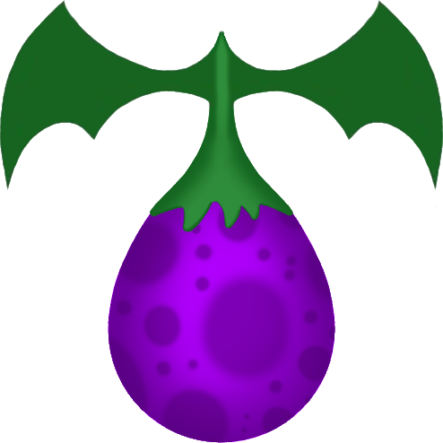
1 Nuts
Each quarter the channel gets a new kind of nut that matches what Droogle is playing (DarkNuts for Kingdom Hearts, SephiNuts for Final Fantasy VII, Deku Nuts for Zelda…). Nuts reset every quarter because every quarter is a competition.
Being here pays. All viewers earn nuts every 10 minutes — lurkers included — with bonuses for subscribers and active chatters. Supporting the stream pays even more:
| Event | Nut bonus | Event | Nut bonus |
|---|---|---|---|
| Raid | 100 | Gifted sub(s) | 250 per sub |
| Follow | 100 | Tip | 100 per $1 |
| Sub / resub | 250 | Cheer | 1 per bit |
Quarterly competition
Your Score combines your Nuts with the hours you've watched this quarter. At the end of each quarter the top 3 scores win prizes (often Amazon gift cards).
!topnuts !tophours !topscore show the top 10. !sack shows your own nuts, hours, score and more.
Ways to earn more
Chat games, trivia, Free Nuts, cards, trophies, Overkills, Top Boards and Goal Wheel spins. See every way to earn
2 Gil
Gil is your Nuts, used to buy items in the Item Shop. Type !sack to sync your Gil to your Nuts. Buying items spends both your Gil and your Nuts, so it lowers your quarterly score — spend wisely! !inventory shows your Gil and items.
3 Pom Poms
Pom Poms are Twitch channel points, used for channel point redemptions. You earn them just by watching, plus bonuses below. Pom Poms & Watch Streaks
Pom Poms & Watch Streaks
You earn Pom Poms periodically while you watch. Every so often a click-to-claim bonus appears at the bottom of chat — click it to collect.
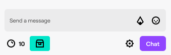
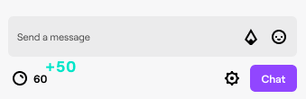
Points from following and joining a raid are claimed automatically.
Watch Streaks
Watch Droogle's next broadcast to keep your streak alive. Every consecutive stream earns extra points automatically, and streak milestones of 10, 25, 50, 100, 150 and beyond also earn generous Nuts rewards!
| Earning action | How | Points |
|---|---|---|
| Watching | Every 5 minutes of live watch time (non-subscribers) | +10 |
| Active watching | Every 15 minutes — click to claim (non-subscribers) | +50 |
| Raid | Joining a raid | +250 |
| Follow | Once, when you first follow | +300 |
| Watch Streak 2 | 2 streams in a row* | +300 |
| Watch Streak 3 | 3 streams in a row* | +350 |
| Watch Streak 4 | 4 streams in a row* | +400 |
| Watch Streak 5+ | 5 or more streams in a row* | +450 |
| 1st Cheer | First cheer on the channel per 30 days | +350 |
| 1st Sub Gift | First gifted sub per 30 days (not anonymous) | +500 |
*Each stream must be at least 10 minutes long, and at least 30 minutes must have passed since the last stream ended.
Every way to earn nuts
Some of these can also lose you nuts — play at your own risk.
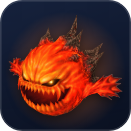
!bomb Bomb
Starts a game of Bomb or passes it on. Holding the bomb when it explodes loses nuts — the last person to pass it before it blows earns nuts!
!fight [user] Fight
Pick someone to fight; a random winner gets nuts. Add new weapons to the armory with !weaponadd.
!first First!
Be one of the first three to type it during a stream for a nuts reward.
!slots Slots
Spin the channel-emote slots for up to 1,000 nuts with a Super Jackpot. You can also lose nuts.
!steal [user] Steal
Try to steal nuts from someone else — but it may backfire on you!
Trivia !answer [answer]
A question posts every 15–30 minutes. First correct answer wins nuts; a wrong answer loses nuts. Multiple-choice questions allow one guess each, two guesses total.
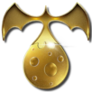
Free Nuts
Redeem once per stream for 100 nuts.
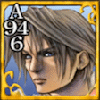
Card
Turns Droogle into a Triple Triad card; the card’s random values decide your nuts reward.
PlayStation Trophy
Create a custom trophy on stream. Its class decides your reward — a rare Platinum pays 1,000 nuts!
Overkill
Kill Droogle with damage far above his remaining HP for 1,000–2,000 nuts. How
Top Boards
The top 3 Healers, Attackers and Chatters of each stream win nuts at the end of the night. Details
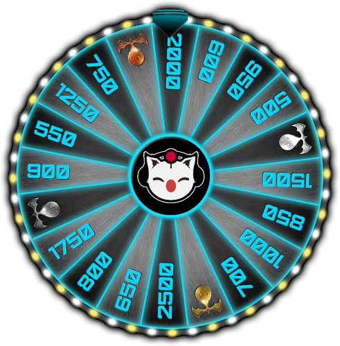
Daily Goals
Each daily goal hit spins the Goal Wheel: 500–2,500 nuts for everyone watching. Details
More nut games: Name That Track!, Who's That FF Monster!?, the Kupo Nut Drop, the Tonberry, the Stagger Wheel, Queen's Blood, chocobo races and duels — see Games.
Stream timer & extensions
Most streams run on a stream timer that Droogle strictly follows. Each stream has a minimum (often 4 hours) and a maximum it can be extended to (often 6 hours).
The stream extends in 10-minute chunks. Each 10 minutes usually takes 20 Kupo Nuts, earned by the community through subs (including gifted), tips, cheers and follows:
| Support | Kupo Nuts |
|---|---|
| Tier 1 sub | 2 |
| Tier 2 sub | 5 |
| Tier 3 sub | 10 |
| Tip | 1 per $1 |
| Cheer | 1 per 100 bits |
| Follows | 5 per 5 follows |
The stream timer bar on the left fills with each kind of support in its own colour. It slides out when support comes in and every 10 minutes, and each notch it fills adds 10 minutes. Mods, VIPs and subscribers can also check with !streamtimer.
Daily goals & the Goal Wheel
Every stream has four daily goals (special event streams may differ):
Every goal reached spins the Goal Wheel for the whole chat a few seconds later: 500 to 2,500 nuts for everyone, or a stream extension. If a goal is hit during a Stagger or a summon, the wheel waits until it’s over. Hit all four for a SPECIAL EVENT!
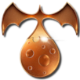 | Bronze Kupo Nut — +10 minutes | 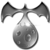 | Silver Kupo Nut — +20 minutes |
| Gold Kupo Nut — +30 minutes | 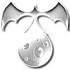 | Platinum Kupo Nut — +60 minutes |
A Kupo Nut from the wheel pours straight into the stream timer bar in its own metal colour, up to the stream’s maximum extension.
Story Mode & the Chaos bar
Interactivity is the heart of this channel, but it can wreck a big story moment. That's why Story Mode exists:
Turns off all SFX commands plus most channel point redemptions and special alerts that interrupt the stream. Most RPG redemptions stay on.
Turns off all SFX commands, redemptions and alerts.
Next to the viewer count, icons light up in colour when something is switched off:
| No SFX commands | No channel point redemptions | No special alerts (tips, cheers, subs) |
The COZY / CHAOS bar
Things go from cozy to CHAOS fast around here. Follows, subs, tips, cheers and raids all add chaos — and bigger events add more (a $10 tip beats a $5 tip, a 100-viewer raid beats a 50-viewer raid, Tier 3 beats Tier 1). A busy chat, high viewership and big redemptions like Fireworks, Nosferatu and Suffer add to it too.
As chaos rises, Droogle's UI changes colour… and at 100% CHAOS you'll get a visit from a very special someone.
SFX commands Subs
Over 1,500 SFX commands — and thanks to randomizers like !randomsora, !randomsnake and !randomffvii, over 10,000 unique sounds. SFX commands are for subscribers. Most have a 10-minute cooldown; some are an hour or even days.
Chat commands
Anyone can use these unless marked Subs. Some have cooldowns.
Your sack
| !sack | Your nuts, hours, score and more — also syncs your Gil |
| !inventory | Your Gil and items |
| !topnuts | Top 10 by nuts this quarter |
| !tophours | Top 10 by hours watched |
| !topscore | Top 10 by score |
Nut games
| !first | Be one of the first 3 each stream |
| !slots | Spin for up to 1,000 nuts |
| !bomb | Start or pass the bomb |
| !fight [user] | Random winner gets nuts |
| !weaponadd [weapon] | Add a weapon for !fight |
| !steal [user] | Steal nuts… or backfire |
| !answer [answer] | Answer the trivia question |
| !kupo [#] | Catch a falling Kupo Nut |
| !guess [answer] | Name That Track! / Who’s That FF Monster |
| !hug @user | Give someone 1–100 of your nuts |
| !love @user | How in love are you? |
RPG
| !rpglevel | Your Healing and Attack levels |
| !topheal | Top 5 healers (all time) |
| !topattack | Top 5 attackers (all time) |
| !boost | Spam during a summon’s Boost window |
| !tonberry | Strike the Tonberry when its ATB is full |
| !bestcard | Your best Triple Triad card score |
Stream info
| !streamtimer | Time left and nuts to the next extension (subs, VIPs & mods) |
| !goals | The next stream-timer goal |
| !chaos | Current Chaos % |
| !alerts | Shows the special alerts list on stream |
| !uptime | How long we’ve been live |
| !schedule | The stream schedule |
| !followage | How long you’ve followed |
Chocobos guide
| !chocobo stable | Your 5 stables |
| !chocobo stats [user] | Someone’s primary chocobo |
| !chocobo rename | Rename a chocobo |
| !chocobo primary | Choose your racer |
| !chocobo feed | Feed greens (5 per stream) |
| !chocobo breed | Breed two chocobos |
| !chocobo release | Free a chocobo |
| !chocorace @user | Challenge someone to a 500-nut duel |
| !accept / !decline | Answer a duel challenge |
Queen’s Blood guide
| !qb | Start your deck / see your rank |
| !topqb | Top 10 collectors |
| !qbsell | Sell a card for nuts |
| !qbgift [user] [card] | Gift a card (Lv. 5+) |
| !qbtrade … | Trade cards (Lv. 8+) |
| !qbaccept / !qbdecline | Answer a trade |
| !qbreset | Wipe your collection |
Fun & chaos
| !banish [user] | 1-minute timeout… |
| !revive | 3 people revive the banished early |
| !wake | Wake a sleeping Droogle (5 chatters) |
| !bluescreen | Blue Screen of Death (30-min cooldown) |
| !ko | K.O.! (20-min cooldown) |
| !toasty | Toasty! (10-min cooldown) |
| !pausing | Forgive my pausing (30-min cooldown) |
| !topicadd [topic] | Add a random chat topic (one posts every 20 min) |
| !clip [title] | Clip the last 30 seconds — title required |
| !gommage MM.DD.YYYY | Register your birthday for the Gommage |
| !scaretips | List the scare tips |
| !stvolume | Current scare-tip volume |
Sound effects Subs
Subscribers can fire over 1,500 SFX commands (most have a 10-minute cooldown; random ones like !randomsora, !randomsnake and !randomffvii pick from thousands of clips). Use them to punctuate a moment — misuse can cost you access. Search & play them all, or see the newest
Links & info
| !discord | Discord invite |
| !youtube | YouTube |
| !tiktok | TikTok |
| !bluesky | Bluesky |
| !merch | Merch |
| !tipjar | Tip link |
| !itemshop | Item Shop list |
| !pronouns | Set your pronouns |
During special alerts
| !hygiene | The Sims: type 5 times to refill hygiene |
| 4 8 15 16 23 42 | LOST: enter the numbers! |
| drooRave drooDance | Golden Rave: spam to fill the bar |
| !taco !burrito … | Taco Bell: place your order |
| !link | Zelda: join the Heroes of Time |
The Droogle RPG system
Droogle has 9,999 HP and 99 MP. Use Pom Pom redemptions and items to heal him, buff him… or bring him to 0 HP. Each stream keeps a death count of every time attackers take him down.
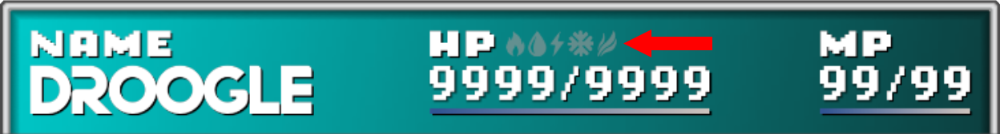
| Redemption | Type | Pom Poms | What it does | |
|---|---|---|---|---|
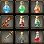 | Item Shop | SHOP | 5 | Buy items for the Use Healing Item / Use Attack Item redemptions. How |
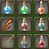 | Use Healing Item | HEAL | 10 | Use a healing item from your inventory. List |
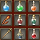 | Use Attack Item | HIT | 10 | Use an attack item from your inventory. List |
| Cure | HEAL | 750 | Restore a portion of HP. Uses 15 MP. Droogle must be alive. | |
| Cura | HEAL | 2,000 | Restore a moderate portion of HP. Uses 25 MP. | |
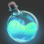 | Curaga | HEAL | 3,000 | Restore a considerable portion of HP. Uses 35 MP. |
| Curaja | HEAL | 5,000 | Restore Droogle to full HP! Uses 50 MP. | |
| Esuna | HEAL | 500 | Remove all status ailments. Uses 15 MP. | |
| Regen | HEAL | 500 | Regen for 5 minutes (cancelled by Poison). Uses 15 MP. | |
| Attack | HIT | 350 | Random basic or elemental attack (fire, ice, lightning, water, wind). | |
| Petrify | HIT | 175 | Petrify Droogle for one minute! | |
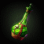 | Poison | HIT | 350 | Poison for 5 minutes. Cured by Esuna or an Antidote. |
| Sleep | HIT | 250 | Sends Droogle to Dreamland until 5 chatters type !wake. Esuna or Remedy cure it. | |
| Silence | HIT | 750 | Mutes Droogle’s mic for 1 minute — live captions take over. Cured by Echo Screen, Esuna or Remedy. | |
| Confuse | HIT | 1,000 | Confuse for 3 minutes — random RPG redemptions fire! | |
| Doom | HIT | 1,000 | 30-second countdown to death. Cured by Esuna or Holy Water. | |
| Meteor | HIT | 2,000 | Hit Droogle with a heavy attack! | |
| Zantetsuken | HIT | 3,500 | Odin is summoned — chance of instant death! |
Heals and attacks earn you RPG EXP — see levels, elements & Overkill. Big events like summons and the Stagger are triggered by tips and bits: Summons.
Elements, levels & Overkill
Elemental defenses
Icons above Droogle's HP bar show his elemental strengths and weaknesses. Mental Erasers weaken a random element; Ward Potions strengthen one (or remove a weakness). Summon attacks are affected too!
Death & Overkill
Bring Droogle to 0 HP and the death counter ticks up. Deal damage far above his remaining HP (2.5× or more — e.g. a Meteor hitting for 150% more than he has left) for an OVERKILL and a reward of 1,000–2,000 nuts.
RPG levels
Everyone has a Healing Level and an Attack Level. Heals and attacks earn EXP — often based on how much you healed or hit. Level-ups are announced in chat.
!rpglevel your levels · !topheal top 5 healers · !topattack top 5 attackers
Top Boards New
At the end of every stream, after the credits, three boards are revealed. The top 3 on each win nuts:
| Board | Ranked by |
|---|---|
| Top Healers | Healing done this stream |
| Top Attackers | Damage dealt this stream |
| Top Chatters | Messages sent this stream (not commands) |
Can’t wait for the reveal? During the 3-minute ad break, a card on the pre-show screen shows the current top 3 of each board.
Limit Break & Omnislash New
The bar under Droogle's name is his Limit gauge. Every point of damage chat deals fills it — 15,000 damage fills it completely (instant kills like Doom, Zantetsuken and Zanmato don't count). When it's full it glows, and Droogle can unleash OMNISLASH.
Omnislash slashes chat 14 times for 8,000–9,999 each, then finishes with a 9,999 strike. Everyone who helped fill that Limit gauge takes the hit: 500 nuts in total, split by how much damage you dealt. The more you hurt him, the more it costs you!
Your name is on the line too: every slash cuts an attacker’s name in half, and the top attacker’s name is blasted to dust by the final strike.
Attackers dealt 13,000 / 1,500 / 500 damage → they lose 433 / 50 / 17 nuts.
Damage dealt after the bar is full doesn't count toward the next one.
The Item Shop
1 Sync
Type !sack so your Gil matches your Nuts. Check items with !inventory.
2 Buy
Redeem Item Shop and type the item. Add a number to buy several: 3 Gysahl Green.
3 Use
Redeem Use Healing Item or Use Attack Item and type the item name.
Healing & support items
| Item | Gil | Effect |
|---|---|---|
| Potion | 100 | Restores 1,000 HP. |
| Hi-Potion | 500 | Restores 3,000 HP. |
| Tent | 2,000 | Full HP (9,999). Only works in the Studio! |
| X-Potion | 3,000 | Full HP (9,999). |
| Ether | 500 | Restores 50 MP. |
| Phoenix Down | 100 | Revives Droogle. |
| Mega-Phoenix | 5,000 | Revives Droogle at full HP. |
| Antidote | 100 | Cures Poison. |
| Echo Screen | 100 | Cures Silence. |
| Soft | 100 | Cures Petrify. |
| Smelling Salts | 100 | Cures Confusion. |
| Maiden's Kiss | 100 | Cures Frog/Toad. |
| Cornucopia | 100 | Cures Mini. |
| Holy Water | 250 | Cures Doom. |
| Remedy | 1,000 | Cures all status ailments. |
| Fire Ward Potion | 2,000 | +50% Fire defense, 20 min (doesn't stack). |
| Water Ward Potion | 2,000 | +50% Water defense, 20 min. |
| Lightning Ward Potion | 2,000 | +50% Lightning defense, 20 min. |
| Ice Ward Potion | 2,000 | +50% Ice defense, 20 min. |
| Wind Ward Potion | 2,000 | +50% Wind defense, 20 min. |
| Prism Powder | 5,000 | Casts Invisibility for 20 min — greatly raises evasion. |
| Gysahl Green | 100 | Catch a chocobo / feed: tiny speed boost. |
| Curiel Green | 300 | Catch / feed: moderate boost. |
| Reagan Green | 600 | Catch / feed: considerable boost. |
| Sylkis Green | 1,000 | Catch / feed: great boost. |
| Carob Nut | 1,500 | Used in chocobo breeding. |
| Zeio Nut | 3,000 | Used in chocobo breeding. |
Attack items & status effects
| Item | Gil | Effect |
|---|---|---|
| Bomb Core | 500 | Fire damage. |
| Dragon Scale | 500 | Water damage. |
| Electro Marble | 500 | Lightning damage. |
| Arctic Wind | 500 | Ice damage. |
| Raven's Yawn | 500 | Wind damage. |
| Toadstool | 500 | Inflicts Frog/Toad. |
| Shrivel | 500 | Inflicts Mini. |
| Mental Eraser | 1,500 | Lowers resistance to a random element for 20 min. |
| Graviball | 3,000 | Deals damage equal to 50% of current HP. |
Status effects cheat sheet
| Status | Caused by | Cured by |
|---|---|---|
| Poison | Attack: Poison redemption | Antidote, Esuna, Remedy |
| Petrify | Attack: Petrify redemption | Soft, Esuna, Remedy |
| Confuse | Attack: Confuse redemption | Smelling Salts, Esuna, Remedy |
| Doom | Attack: Doom redemption | Holy Water, Esuna, Remedy |
| Frog / Toad | Item: Toadstool | Maiden’s Kiss, Esuna, Remedy |
| Mini | Item: Shrivel | Cornucopia, Esuna, Remedy |
| Silence | Attack: Silence redemption | Echo Screen, Esuna, Remedy |
| Sleep | Sleep redemption | 5 different chatters type !wake, or Esuna, Remedy |
| Burn | Summon: Ifrit | Wears off after 2 minutes (100–200 damage every 10 s) |
| Regen | Heal: Regen redemption | (good!) Cancelled by Poison |
Revives
Phoenix Down revives Droogle; Mega-Phoenix revives him at full HP. The Phoenix summon gives him Auto-Life so the next death never happens. Summons
Summons
Summons are triggered by exact tip or bit amounts. They hit (or protect) Droogle through the RPG system.
The offensive summons use the Final Fantasy VIII Boost mechanic. When chat announces Boost is active, spam !boost as many times as you can before time runs out — every boost adds damage!
Elements matter
Summon attacks are affected by Droogle's elemental defenses. Check the icons above his HP bar — a Mental Eraser before an Ice summon hits harder; a Ward Potion softens it.
Yojimbo
Like a Stagger, Yojimbo's summon lasts as long as the community wants — and Yojimbo loves to be paid, especially in bits. How much you pay decides which attack he (or his loyal dog, Daigoro) uses:
| Wakizashi | Minor damage | Daigoro | Considerable damage |
| Kozuka | Moderate damage | Zanmato | Instant kill! |
Alexander — Divine Judgment
Rises behind the Philly skyline as the studio shakes and the lights go out, then rains holy lasers into the studio for 2,000–3,500 damage. Boost lasts until the lasers fire: +40 damage per !boost (max 50).
Carbuncle — Pearl Light
Surrounds Droogle with a shield for 20 minutes that considerably reduces both physical and magical damage.
Phoenix — Flames of Rebirth
Restores HP and MP to max and blesses Droogle with Phoenix's wings. If he hits 0 HP, he's instantly revived to full.
Final Fantasy VII STAGGER!
A Stagger is the community working together for a ton of nuts. Every Stagger attack spins the Stagger Wheel, and everyone in chat earns whatever it lands on: 250 to 725 nuts.
Start a Stagger
- Tip $33.33 $44.44 $55.55 or $99.99
- Cheer 3,333 4,444 5,555 or 9,999 bits
- Redeem Final Fantasy VII Stagger for 33,333 Pom Poms (5-day cooldown)
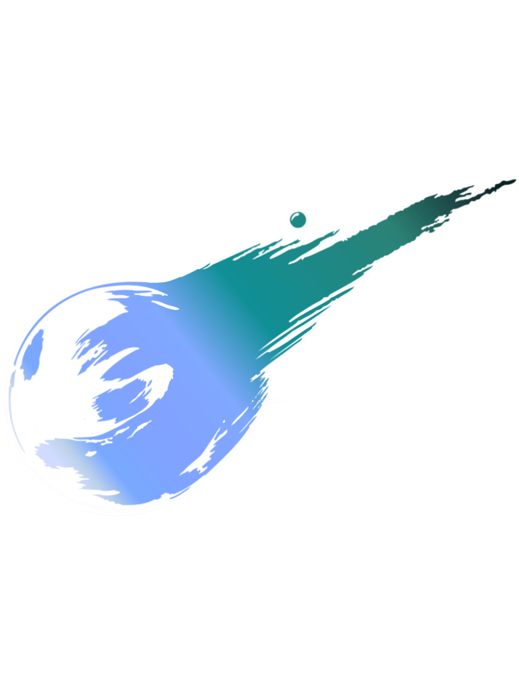
Once the Stagger begins (after the Meteor hits), Droogle's HP drops to 0 and starts regenerating at 125 HP every second. Every attack knocks it back down by its damage. The Stagger lasts as long as chat keeps his HP below the max of 9,999, and ends a few seconds after it refills.
| Attack | Trigger | Effect |
|---|---|---|
| Basic Attack | 100–299 bits · a follow | 500–750 damage |
| Critical Attack | $3+ · 300–499 bits · Tier 1 or Prime sub · 1 gifted sub | 1,750–2,000 damage |
| Slow | $5+ · 500–999 bits · Tier 2 sub · 2 gifted subs | Critical + Slow: regen at half speed for 60 s |
| Stop | $10+ · 1,000+ bits · Tier 3 sub · 3+ gifted subs | Critical + Stop: regen paused for 60 s |
Each support event is one attack. An attack list in the bottom-left corner shows who hit Droogle and with what. Slow and Stop overlap rather than stack, and Stop beats Slow. Stagger hits also charge Droogle’s Limit gauge at half rate.
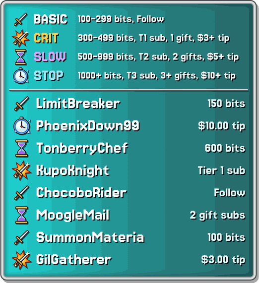
The attack list, newest on top
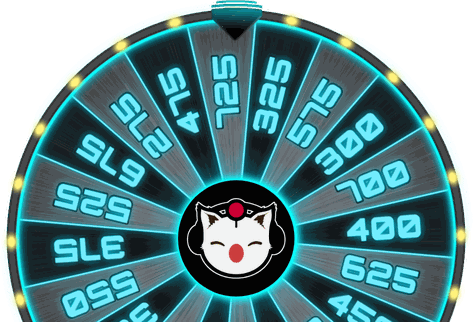
The Stagger Wheel rises in after every attack
The Tonberry
Tip $13.31 or cheer 1,331 bits and a Tonberry appears about 6 seconds later. Lantern in one hand, Chef’s Knife in the other, it spends 10 minutes slowly walking toward Droogle. Chat has until then to take it down.
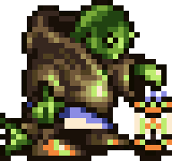
Fight it
The ATB bar under the Tonberry fills every 30 seconds. When it’s full, the first 5 different chatters to type !tonberry each land a strike for 500–999 damage — 900+ is a CRITICAL. Then the bar starts filling again.
Hidden HP
Its HP isn’t shown. Most Tonberries have 8,000–9,999 HP, but about 1 in 4 is a tough one with 10,000–12,000. Bring it to 0 and everyone in chat earns 1,000 nuts.
On the way, it attacks Droogle
Hoppin’ Mad minutes 2 & 6
It hops in a rage and rains pots and pans on Droogle’s head for 1,000–1,500 damage.
Scourge minutes 4 & 8
Its lantern drains Droogle’s soul for −50 MP.
Chef’s Knife
If the Tonberry reaches Droogle, it’s an instant KO — unless Phoenix’s wings revive him.
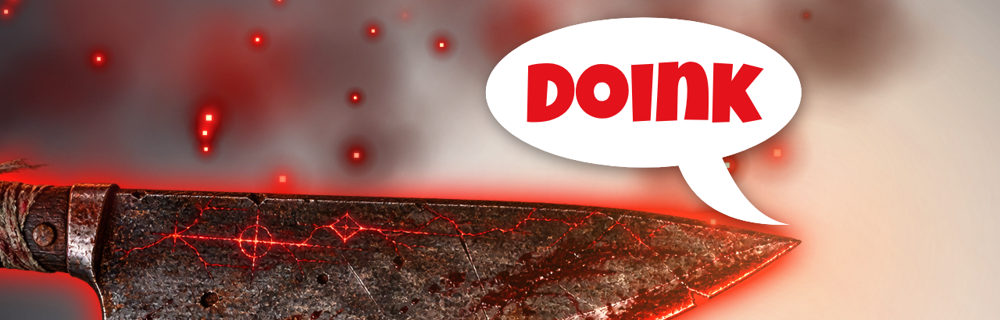
Its walk pauses while the pre-show screen is up during ad breaks. A second Tonberry waits its turn. The summoner gets Top Attackers credit for the damage the Tonberry deals; chat strikes don’t count toward EXP or Top Attackers.
Chocobo Stables
Build a stable of up to five chocobos, raise their speed, race them on stream and breed your way to the legendary Gold Chocobo. Everything runs in chat with !chocobo plus two channel point redemptions.
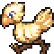
The path
- Catch a chocobo with greens.
- Name it and make it your primary.
- Feed it greens to raise its speed.
- Race it to earn race wins and loot.
- Breed chocobos to unlock new colours.
Shopping list
| Item Shop item | Gil |
|---|---|
| Gysahl Green | 100 |
| Curiel Green | 300 |
| Reagan Green | 600 |
| Sylkis Green | 1,000 |
| Carob Nut (breeding) | 1,500 |
| Zeio Nut (breeding) | 3,000 |
Gil = your Nuts. Type !sack to sync, !inventory to check.
Catching a chocoboItem Shop + Use Healing Item
- Type !sack so your Gil matches your Nuts.
- Redeem Item Shop and type the green, e.g. Curiel Green. Put a number first to buy in bulk: 3 Gysahl Green.
- Redeem Use Healing Item and type the green's name. One green is used up as soon as the chocobo appears.
- Chat tells you its class and sex (wild chocobos are always Yellow; male or female is 50/50). You have 30 seconds to reply Catch or Release.
- Catch puts it in your lowest empty stable. If all five are full, reply with the stable number (1–5) to replace that chocobo, or None to let the new one go.
| Green | Weak | Good | Great | Wonderful |
|---|---|---|---|---|
| Gysahl | 50% | 32% | 14% | 4% |
| Curiel | 30% | 45% | 19% | 6% |
| Reagan | 20% | 45% | 25% | 10% |
| Sylkis | 10% | 40% | 36% | 14% |
| Class | Starting speed | Max speed |
|---|---|---|
| Weak | 10–25 | 150 |
| Good | 26–50 | 190 |
| Great | 51–100 | 230 |
| Wonderful | 101–180 | 255 |
Class matters twice: it caps how fast feeding can make a chocobo, and it decides what you can breed. Replacing a full stable erases the old chocobo for good. Use Healing Item doesn’t work during the pre-show or ad breaks.
Stable commands
Every stable command asks you a question in chat. Reply with just the number or word it asks for — you have 30 seconds each time.
!chocoboThe menu
Lists your commands: stable, primary, rename, feed, race, breed and release. !chocobo race explains how to race (see Racing).
!chocobo stableSee all five stables
Shows every stable on one line: name, sex, colour, class, race wins and speed, with your racer marked (Primary). Empty stables say Empty.
Droogle => Stable #1 (Primary) - Droop (Male): Yellow | Wonderful | 4 Race Win(s) | Speed: 198 Stable #2 - Bowboy (Male): Yellow | Great | 0 Race Win(s) | Speed: 126 Stable #3 - Empty
!chocobo renameName a chocobo
Reply with the stable number, then send the new name — your next message becomes the name, spaces and all, so type it carefully (and leave out the # symbol). New chocobos are Unnamed. The name shows on stream when you race, and duels need a named primary.
!chocobo primaryChoose your racer
Reply with a stable number. That chocobo races for you in races and duels; only one chocobo can be primary. If you ever replace or release your primary, pick a new one before you race.
!chocobo releaseFree up a stable
Reply with the stable number, then Yes to confirm or No to cancel. The chocobo is gone for good — nothing is refunded.
!chocobo feedRaise speed with greens (5 per stream)
- Reply with the stable number.
- Reply with a quantity and a green, e.g. 2 Curiel or 5 Sylkis (no number = 1). You must already own the greens.
- Chat shows the speed change, e.g. Droop’s speed has been raised from 190 to 205!
| Green | Speed per green | 5 at once |
|---|---|---|
| Gysahl | +0 or +1 | +0 or +5 |
| Curiel | +1 to +2 | +5 or +10 |
| Reagan | +2 to +5 | +10 to +25 |
| Sylkis | +5 to +9 | +25 to +45 |
- One roll per feeding, multiplied by the quantity — 5 Gysahl is all or nothing.
- 5 greens per stream, shared by all your chocobos (the count resets when Droogle starts the show). Asking for more than you have left is refused and your greens are returned.
- Speed stops at the class max (150 / 190 / 230 / 255).
Tip: breeding and duels can push a chocobo past its class max — feeding it then drops it back to the max, so don’t feed a chocobo that’s already over.
Racing & rewards
Racing 77 777 1,777 Race Your Chocobo!Your primary races on stream
Cheer exactly 77, 777 or 1,777 bits, or redeem Race Your Chocobo! (7,777 Pom Poms). Your primary chocobo races on screen with its name, rider and colour. Speed is everything — the faster your chocobo, the better its odds:
| Primary speed | 77 bits | 777 bits | Pom Poms |
|---|---|---|---|
| 240+ | 3.3% | 33% | 25% |
| 200–239 | 2.5% | 20% | 17% |
| 170–199 | 2% | 14% | 12.5% |
| 150–169 | 1.7% | 11% | 10% |
| under 150 | 1% | 9% | 8% |
| Primary speed | 1,777 bits |
|---|---|
| 230+ | 100% |
| 200–229 | 50% |
| 160–199 | 33% |
| under 160 | 25% |
- Win: your chocobo gets +1 race win (wins matter for breeding) and you choose a reward (below). Its speed doesn’t change.
- Lose: it places 2nd to 6th at random. Nothing changes — try again.
- At 230 speed or more, a 1,777-bit race is a guaranteed win. Only Great (max 230) and Wonderful (max 255) chocobos can get there.
- No primary chocobo? The race still plays, but there’s nothing to win and the bits aren’t returned. Check !chocobo stable first.
- Race as often as you like — but please don’t spam them, since every race takes over the screen.
Winner’s rewardPick 1 of 4
After a win, chat offers four choices. Reply 1, 2, 3 or 4 within 60 seconds (no reply = no reward).
Options 1–3: items
Three different random items, 1–5 of each, from: Hi-Potion, Tent, X-Potion, Mega-Phoenix, Remedy, Sylkis Green, Zeio Nut, a Ward Potion, Prism Powder, Bomb Core, Dragon Scale, Electro Marble, Arctic Wind, Raven’s Yawn, Toadstool, Shrivel, Mental Eraser or Graviball.
Option 4: nuts
1,000, 2,000, 3,000, 4,000 or 5,000 nuts — random each time, so check the offer before you pick.
Breeding, duels & stats
!chocobo breedUnlock Blue, Green, Black & Gold
- Reply with the first stable number, then the second. They must be opposite sexes.
- Reply Carob or Zeio — the nut you’ll breed with (buy them in the Item Shop).
- Confirm with Yes. Chat announces the baby’s colour and class.
- Reply with the stable number to put it in, or None to release it.
What decides the baby
Four things: the parents’ colours, their classes, their combined race wins (duel wins don’t count) and the nut. The recipes are yours to discover — experiment, or follow the FFVII breeding guide.
Baby speed comes from the parents: their speeds added together, divided by 1.75 (max 255). It starts with 0 wins and no name.
A Great Yellow + a Wonderful Yellow, a Carob Nut and 4 race wins between them always gives a Blue or Green chocobo.
- The parents stay exactly as they were.
- The baby replaces whatever is in the stable you pick — choose an empty one!
- Saying No (or picking two chocobos of the same sex) returns your nut. Running out of time doesn’t.
!chocorace @userRace someone for 500 nuts
Challenge another chatter’s primary chocobo. They have 60 seconds to type !accept or !decline. Both of you need 500 nuts and a named primary chocobo.
| Speed lead | 0 | 20 | 50 | 75 | 100 | 125+ |
|---|---|---|---|---|---|---|
| Faster chocobo wins | 50% | 65% | 82% | 92% | 98% | 100% |
Each chocobo scores its speed plus a random 0–125; the higher score wins.
- The winner takes 500 nuts from the loser (or whatever the loser has left).
- Both chocobos get faster: winner +2 or +3, loser +1 or +2 (max 255).
- One duel at a time, then about a 10-minute rest before the next.
!chocobo stats @userScout someone’s primary
Shows that chatter’s primary chocobo: name, colour, speed and wins. Handy before you challenge them.
Games & challenges
Name That Track! 200 Pom Poms
A song plays behind a hidden album cover. Type !guess [title] with the title — typos and a missing word are fine. First right answer wins 500 nuts. Final Fantasy, Kingdom Hearts and Chrono tracks. 10 seconds into the song, blanks for each letter appear, and a quarter of them fill in by the 30-second mark.
Who’s That FF Monster!? 200 Pom Poms
A monster or boss appears in silhouette. Type !guess [name] — first right answer wins 250 nuts. Letter-blank hints appear in the last 15 seconds.
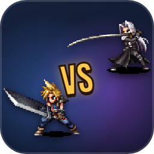
Final Fantasy Battle! 50 Pom Poms
Two random Final Fantasy characters fight — wager your Pom Poms on the winner. New fighters join all the time. Roster
Card 500 Pom Poms
Droogle becomes a Triple Triad card with your message on the back. The card’s values decide your nuts. !bestcard shows your best.
PlayStation Trophy! 175 Pom Poms
Name a custom trophy and it pops on stream. Bronze, Silver, Gold… a rare Platinum pays 1,000 nuts.
Moogle Mailbox 200 Pom Poms
Send Droo the Moogle a letter — a gaming-news question or anything you want Droogle’s take on. Letters are read on stream during the Moogle Mailbox segment.
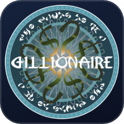
Who Wants To Be A Gillionaire!? 50 Pom Poms
Redeem Add Gillionaire Question with your question, four choices, the answer and a difficulty (1–4) — the redemption shows the exact format. If it’s used in the game you earn 250 nuts.
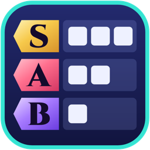
FF Tier Ranker
Droogle ranks a random Final Fantasy category — songs, summons, final bosses, Cids, airships — from S to F. Back-seat ranking in chat is encouraged.
Push the stream timer to its maximum and the night ends with a special event — usually a Marbles On Stream 5-race Grand Prix or an episode of Who Wants To Be A Gillionaire!?
Queen’s Blood
Redeem Queen’s Blood (250 Pom Poms) to add a random card from FFVII Rebirth’s card game to your collection. Rarer cards are worth more points, and points set your rank.
| !qb | Create your deck, or see your rank and the collection link |
| !topqb | Top 10 collectors by points |
| !qbsell | Pick a card by number (e.g. #67 or #125B), see its nut value, then reply Yes or No |
| !qbgift | Gift a card (names are case-sensitive). Needs Lv. 5; 1 gift per day; they need a deck |
| !qbtrade | [user] [your card] for [their card]. Needs Lv. 8; 1 trade per day each |
| !qbaccept / !qbdecline | Answer a trade within 5 minutes |
| !qbreset | Wipe your whole collection (asks to confirm) |
Full collection: tinyurl.com/qbcollection · Refunded during the pre-show and ad breaks.
| Rank | Points | Rank | Points |
|---|---|---|---|
| Servant | 0–10 | Tactician | 176–235 |
| Squire | 11–25 | Marquis | 236–305 |
| Acolyte | 26–50 | Sovereign | 306–385 |
| Knight | 51–85 | Executioner | 386–485 |
| Knight II | 86–125 | Champion | 486–605 |
| Captain | 126–175 | ||
| Blood King — 637+ points and cards #20, 40, 60, 80, 97, 115 & 133 | |||
Final Fantasy Battle!
Redeem Final Fantasy Battle! (50 Pom Poms) and two random Final Fantasy characters square off — wager your Pom Poms on who wins. The roster keeps growing; recent recruits:
More redemptions
On top of the RPG, games and Item Shop, here’s what else your Pom Poms can do. Most redemptions are refunded during the pre-show and ad breaks.
Hype moments
Nut showers
While live, every follow, sub, gift, tip, raid and 50+ bit cheer showers all viewers with 50–250 nuts. During a Stagger, attacks spin the Stagger Wheel instead.
Hype Train
Reach level 5 and everyone watching gets 5,000 nuts.
Raids
Raiders get 100 nuts and a hype welcome — a 5+ viewer raid sets off the full raid animation.
Kupo Nut Drop
Every 10–30 minutes while Droogle is live and playing a game (but not in Story Mode), Droo the Moogle flies across the screen 5 times, dropping one Kupo Nut on each pass. Every drop’s nuts are numbered 1 to 5.
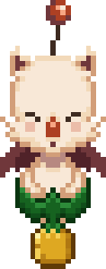
Catch one
Type !kupo [#] with the number on the nut — e.g. !kupo 3. First one to call a nut catches it and their name takes its place. You can catch one nut per drop, so pick wisely. A nut can still be called for 5 seconds after it falls off screen, to cover stream delay.
What they’re worth
Each nut’s metal is rolled on its own. The rarer the metal, the faster it falls.
| Nut | Nuts | Chance | Falls | |
|---|---|---|---|---|
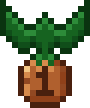 | Bronze | 50 | 50% | Slowest |
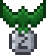 | Silver | 100 | 30% | Faster |
| Gold | 250 | 15% | Faster still | |
| Platinum | 500 | 5% | Fastest |
Special Alerts
Tip, cheer or gift the exact amount below and something special happens on stream. Tags link to the full explanation.
| Special alert | Tip | Bits | Gifted subs |
|---|---|---|---|
| Chocobo Race (High Difficulty) Chocobo | — | 77 | — |
| Cait Sith Limit Break - 2 Dice Limit Break | $4.77 | 477 | — |
| The Last Dragon | $5.01 | 501 | 2 |
| Metal Gear Solid Codec Call (w/ Message) | $5.05 | 505 | — |
| Random Boss Battle Music | $5.55 | 555 | — |
| Summon Shiva (Final Fantasy X) Summon | $6.60 | 660 | — |
| Scare Tip Lvl. 1 Scare | $6.66 | 666 | — |
| Cait Sith Limit Break - 3 Dice Limit Break | $6.77 | 677 | — |
| Chocobo Race (Medium Difficulty) Chocobo | — | 777 | — |
| Scare Tip (Sword of the Sea Release Date) Scare | $8.19 | 819 | — |
| The Terminator | $8.27 | 827 | 3 |
| Cait Sith Limit Break - 4 Dice Limit Break | $8.77 | 877 | — |
| Summon Leviathan Summon | $8.88 | 888 | — |
| Severance Wellness Session | $8.99 | 899 | — |
| Undefeatable | $9.30 | 930 | 4 |
| Summon Yojimbo (Final Fantasy X) Summon | $9.99 | 999 | — |
| Ken Squats | $10.10 | 1,010 | — |
| The Matrix | $10.80 | 1,080 | 6 |
| Summon Ramuh Summon | $11.11 | 1,111 | — |
| Thanos Snap | $11.99 | 1,199 | 7 |
| It's Journey! | $12.12 | 1,212 | — |
| Metal Gear Solid V | $12.20 | 1,220 | 8 |
| Cait Sith Limit Break - 5 Dice Limit Break | $12.77 | 1,277 | — |
| Kingdom Hearts | $13.13 | 1,313 | 9 |
| Summon Tonberry Summon | $13.31 | 1,331 | — |
| Clair Obscur Gommage Gommage | $13.33 | 1,333 | 33 |
| Scare Tip Lvl. 2 Scare | $13.37 | 1,337 | — |
| The Leftovers (SO SAD!) | $14.10 | 1,410 | 10 |
| Final Fantasy Scare Alerts (Sound Alerts Extension) Scare | $14.14 | 1,414 | — |
| L O S T | $15.16 | 1,516 | 11 |
| Bioshock | $15.40 | 1,540 | 12 |
| Cait Sith Limit Break - 6 Dice Limit Break | $15.77 | 1,577 | — |
| Summon Carbuncle (Casts Protect) Summon | $16.16 | 1,616 | — |
| Scare Tip Lvl. 3 Scare | $16.66 | 1,666 | — |
| Summon Ifrit Summon | $17.17 | 1,717 | — |
| Chocobo Race (Low Difficulty) Chocobo | — | 1,777 | — |
| Death Stranding PTSD | $18.88 | 1,888 | — |
| Summon Alexander Summon | $19.19 | 1,919 | — |
| Taco Bell | $19.62 | 1,962 | 13 |
| The Legend of Zelda | $19.86 | 1,986 | 14 |
| Jurassic Park Recorder | $19.93 | 1,993 | 15 |
| The Sims | $20.20 | 2,020 | 16 |
| Fight Club | $21.21 | 2,121 | 17 |
| The Avengers Recorder | $22.00 | 2,200 | 18 |
| Summon Phoenix (Full HP/MP + Auto-Life) Summon | $22.22 | 2,222 | — |
| Titanic Recorder | $23.23 | 2,323 | 19 |
| L O S T | $23.42 | 2,342 | — |
| Final Fantasy VII STAGGER! (also $44.44, $55.55, $99.99) Stagger | $33.33 | 3,333 | 20 |
| Kpop Demon Hunters RAVE! Party | $66.66 | 6,666 | — |
| Final Fantasy VII RAVE! Party | $77.77 | 7,777 | 21 |
| Final Fantasy VIII RAVE! Party | $88.88 | 8,888 | 22 |
| Instant CHAOS! Party | $100.00 | 10,000 | 25 |
| Randomized Special Alert | — | — | 5 |
Scare alerts
Scare Tips (Lv. 1–3) and the Final Fantasy Scare Alerts (via the Sound Alerts extension) are jump-scares for Droogle. !scaretips lists them in chat.
Cait Sith Limit Break
Cait Sith throws 2–6 real 3D dice (more dice for bigger amounts). Damage is the total × 100, multiplied by your best match: doubles ×2, triples ×3, all the way up to ×6. Your damage also charges Droogle's Limit Break.
Games Completed
Every game Droogle has played start to finish on stream, in the order he beat them, with his score out of 10 and when he last streamed it.
On the guide website you can search this list, filter it by score and sort it by score or by when it was last streamed. Dates come from Droogle’s Twitch stream history; a ~ marks a best guess for games streamed in Twitch’s Retro category.
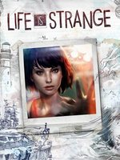
Life Is StrangeLast streamed Apr 20179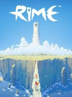
RiMELast streamed May 20177.5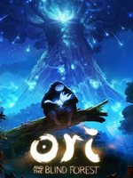
Ori and the Blind ForestLast streamed Mar 20189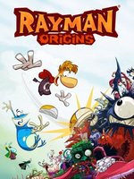
Rayman OriginsLast streamed Jul 20179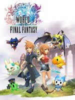
World of Final FantasyLast streamed Jul 20177.5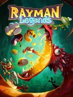
Rayman LegendsLast streamed Aug 20179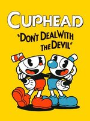
CupheadLast streamed Jul 20228.5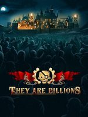
They Are BillionsLast streamed Apr 20219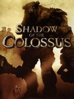
Shadow of the ColossusLast streamed Feb 20189.5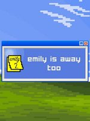
Emily Is Away TooLast streamed Mar 20187.5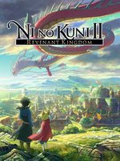
Ni no Kuni II: Revenant KingdomLast streamed Jul 20187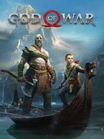
God of War (2018)Last streamed May 201810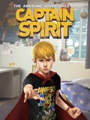
The Awesome Adventures of Captain SpiritLast streamed Jun 20186.5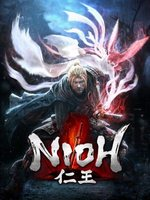
NiohLast streamed Jun 20187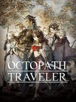
Octopath TravelerLast streamed Aug 20187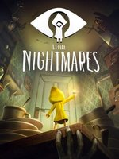
Little NightmaresLast streamed Oct 20188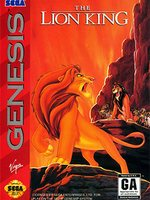
The Lion King (SNES)Last streamed ~Jan 20195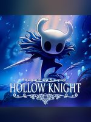
Hollow KnightLast streamed Jul 202210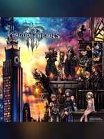
Kingdom Hearts IIILast streamed Feb 20198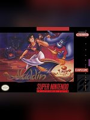
Aladdin (SNES)Last streamed ~Mar 20195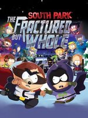
South Park: The Fractured But WholeLast streamed Mar 20198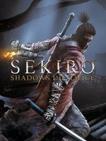
Sekiro: Shadows Die TwiceLast streamed Apr 20199.5Patch notes
November 2026
| Nov 8 | The SFX list shows where each sound is from: search Austin Powers to try it. !newsfx is retired; the list’s Newest filter shows new sounds. On the website, Games Completed opens on the 30 most recently streamed games (Show all for the rest). |
| Nov 7 | 75 more games join Games Completed, going all the way back to Journey in July 2015, from Droogle’s full Twitch stream history. List |
| Nov 7 | New Games Completed page: all 174 games Droogle has beaten on stream, with box art and his score out of 10. Each game shows when Droogle last streamed it; search, filter by score, or sort by score or date on the website. List |
| Nov 7 | Goal Wheel Kupo Nuts now add Bronze +10, Silver +20, Gold +30 and Platinum +60 minutes to the stream (up to the maximum extension). Details |
| Nov 7 | New SFX list on the guide website: search all 1,500+ SFX commands by name or by what they say, play any of them right in your browser, and tap one to copy it. The website’s new home is drooglettv.github.io/droogle-guide. |
| Nov 7 | Summon Alexander ($19.19 / 1,919 bits) — the holy fortress rises behind the Philly skyline, the studio shakes and the lights go out, then Divine Judgment rains into the studio for 2,000–3,500 damage. Boost the whole way up with !boost. Details |
| Nov 6 | Daily goals now spin the Goal Wheel on their own a few seconds after they’re hit (waiting until any Stagger or summon is over), and a met goal glows on the bar. A Kupo Nut won on the wheel pours its minutes straight into the stream timer. Details |
| Nov 6 | Follows now count toward the stream timer: every 5 follows add 5 Kupo Nuts toward the next 10 minutes. |
| Nov 6 | The Kupo Nut Drop no longer drops while Story Mode is on. |
| Nov 5 | Stagger rework: every attack spins the new Stagger Wheel for 250–725 nuts to everyone in chat. Damage is randomized (Basic 500–750, Critical 1,750–2,000), an on-screen list shows every attack, Droogle’s HP regenerates live in his HUD, and the Stagger ends on its own once he’s back to full. Details |
| Nov 5 | Sleep (250 Pom Poms) sends Droogle to Dreamland: the screen goes hazy and purple while he snoozes. Five different chatters type !wake to wake him (Esuna and Remedy work too). Blue Screen of Death moves to the !bluescreen chat command, once every 30 minutes. |
| Nov 5 | A brand-new stream timer bar: a glass tube that fills in a colour for each kind of support and celebrates every +10 minutes. It stays out of the way during Staggers. Details |
| Nov 5 | Cait Sith now throws real 3D dice with true odds. Matching dice glow red and multiply the damage, from doubles ×2 all the way to ×6. Details |
November 2026 (cont.)
| Nov 5 | Fixes: one viewer could take two places on Top Healers, and Droogle himself no longer takes a leaderboard spot. Droogle’s HP now drops the moment a hit lands, and the LOST plane crashes behind the buildings again. |
| Nov 3 | Summon Tonberry ($13.31 / 1,331 bits) — it slowly walks toward Droogle with a Chef’s Knife. Fill its ATB bar and strike with !tonberry before it gets there; beat it and everyone in chat earns 1,000 nuts. Details |
| Nov 3 | Kupo Nut Drop: every so often during gameplay, Droo the Moogle flies in and drops five numbered nuts. Catch one with !kupo [#] for up to 500 nuts. Details |
| Nov 3 | Final Fantasy Battle! runs on a new overlay: HP bars slide down as damage lands and the winner message is easier to read. |
| Nov 3 | Fixed a random-number bug: Name That Track! and Who’s That FF Monster!? now pick from their whole lists (only the first half ever came up before), and Omnislash damage uses its full range. |
| Nov 3 | The Chocobo guide is now complete: every command has its own section with catch odds, feeding gains, race win chances by speed, rewards and duel odds. Race rewards, a breeding message and feeding an empty stable were also fixed. Details |
| Nov 3 | During the 3-minute ad break, a leaderboard card on the pre-show screen shows who’s leading Top Healers, Top Attackers and Top Chatters so far this stream. Details |
| Nov 2 | Omnislash gets personal: each slash now cuts an attacker’s name in half, and the top attacker’s name is disintegrated by the final strike. Details |
| Nov 1 | Who’s That FF Monster!? now pays 250 nuts (up from 100). Both guessing games wait until the show starts — redeem one during the pre-show and your channel points come straight back. |
| Nov 1 | FF Tier Ranker: song boards now pause the background music so you can hear every clip. |
| Nov 1 | Droogle now has a Limit Break! Every attack fills his Limit gauge — when it’s full he can unleash Omnislash on the chatters who charged it. Details |
| Nov 1 | Letter hints! Name That Track! shows a blank for every letter 10 seconds into the song, with a quarter of the letters filled in by 30 seconds. Who’s That FF Monster!? does the same in its last 15 seconds. |
| Nov 1 | Name That FF Track! is now Name That Track! — Kingdom Hearts, Kingdom Hearts II, Chrono Trigger and Chrono Cross join the Final Fantasy pool, with full 30-second clips and 5 extra seconds to guess. |
Earlier updates
October 2026
| Oct 31 | Who’s That FF Monster!? and Name That FF Track! redemptions added. Details |
| Oct 31 | End-of-stream Top Healers, Top Attackers and Top Chatters boards — each pays 1,000 / 500 / 250 nuts. Details |
| Oct 30 | FF Tier Ranker stream segment: Droogle ranks a random Final Fantasy category from S to F. Details |
| Oct 25 | !topqb Queen’s Blood leaderboard, and points-based ranks up to Blood King. Details |
| Oct 14 | Summon Ifrit ($17.17 / 1,717 bits) — a fire summon with Boost that leaves Droogle Burning for 2 minutes. Details |
| Oct 14 | Chocobo Duels with !chocorace, plus !chocobo stats to look up anyone’s primary chocobo. Details |
Earlier in 2026
| Aug 9 | 48 characters added to Final Fantasy Battle. |
| Aug 6 | Several hundred new trivia questions (many multiple choice: one guess each, two guesses total) and several hundred new random topics. |
| May 17–26 | Queen’s Blood redemption added, followed by !qbreset !qbsell !qbgift !qbtrade. |
2025
| Aug 15 | Kpop Demon Hunters RAVE! special alert. |
| Jun 6 | Scare Tip for Shoop’s reaction to Sword of the Sea’s release date. |
| May 26 | Clair Obscur Gommage special alert. Register your birthday with !gommage MM.DD.YYYY (e.g. !gommage 05.08.1988); when it hits, birthdays decide who gets erased — timed out for 30 seconds, all in good fun! |
| Apr 9 | Final Fantasy Scare Alerts profile on the Sound Alerts extension: $14.14 / 1,414 bits turns it on for 20 minutes. Activating it again during the timer gives 50% off and resets it; a 3rd activation and beyond gives 75% off. |
| Feb | Severance Wellness Session alert; Basic Attack added to the Stagger; Stagger added as a channel point redemption. |
This channel only works because you interact with it. Find the community between streams: !discord !youtube !tiktok !bluesky !schedule